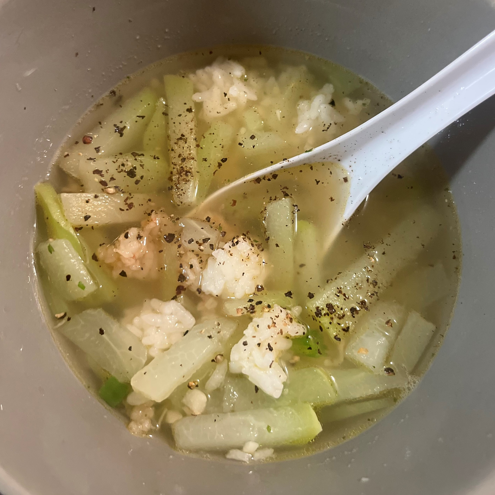
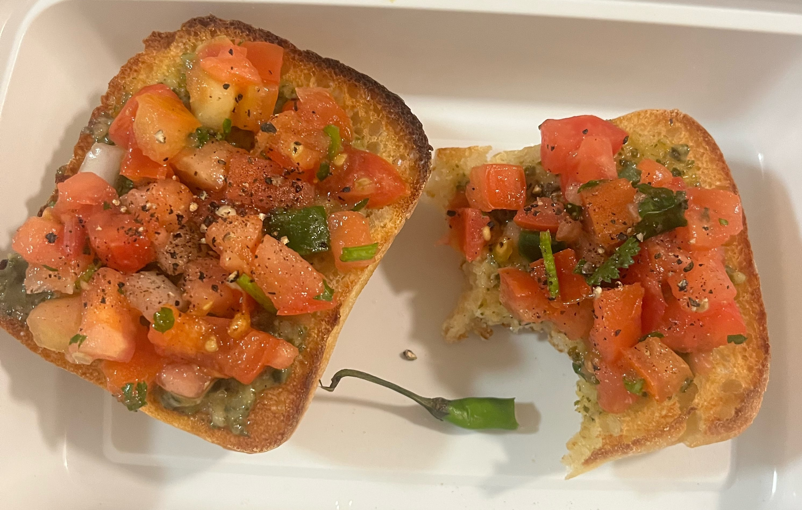

Vi Nguyen
I had a light cough, so I ate chayote soup that I made the day before. It was my first time making this soup and it reminded me of home.
I was still hungry after eating soup, so I made bread with pesto and pico de gallo on top.
I had soup again because I wanted to finish the rest of it.